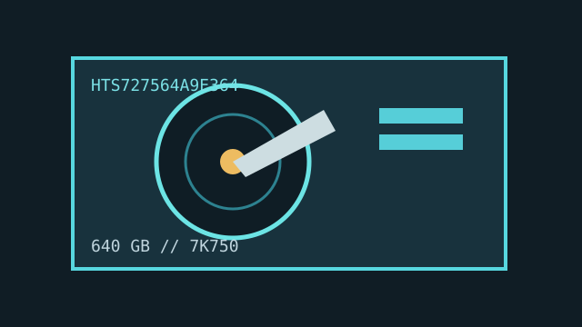

[ IDENTIFIED HDD // MODEL-SPECIFIC RECORD ]
HGST Travelstar 7K750 HTS727564A9E364
640 GB, 2.5-inch mobile SATA drive, 7,200 RPM. The complete suffix matters; optional availability/encryption variants have different ordering codes.

IDENTIFICATION: Verify the full label against the data sheet model table. Family-level options are not evidence that this exact SKU includes encryption or 24/7 qualification.
Recorded specifications
| Exact model / capacity | HTS727564A9E364 / 640 GB nominal |
|---|---|
| Form factor / height | 2.5-inch / 9.5 mm |
| Interface | SATA 3 Gb/s |
| Rotation / cache | 7,200 RPM / 16 MB buffer |
| Sector / recording format | Advanced Format, 512e (512-byte logical / 4,096-byte physical); PMR. |
Compatibility, noise, shock and reliability
- Use a SATA host; allow 9.5 mm clearance and confirm controller/BIOS support for the capacity and 512e logical sector presentation. An interface match alone is not a boot or RAID compatibility guarantee.
- The manufacturer data sheet and installation guide specify noise, operating/non-operating shock and acoustic test conditions. Keep the drive protected from shock and vibration; those lab limits are not handling targets.
- Check exact suffix before relying on SED, enhanced-availability or other family options. Published reliability ratings are population/design values and do not certify this drive's current condition.
- When preserving data, avoid filesystem repair or write tests; record firmware and host details and make a verified image before analysis where safe.
Manufacturer documents
- HGST Travelstar 7K750 Data SheetWestern Digital/HGST manufacturer specification with the 640 GB model table.
- HGST Travelstar 7K750 Quick Installation GuideManufacturer mounting, handling and connector guidance; confirm SKU suffixes.